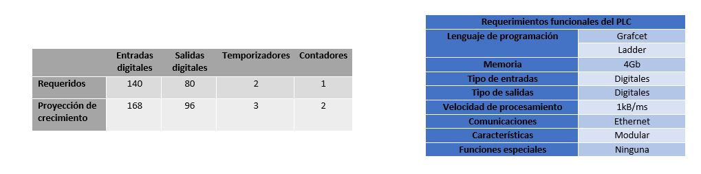
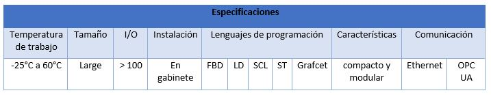

100TATE
100TATEGrafcet nivel 1 - Línea de producción de la estructura
Con este grafcet se quiere mostrar la secuencia de procesos que se llevan a cabo en esta línea de producción. Se muestra desde el corte de la materia prima, hasta la celda robotizada de soldadura, pasando por procesos manuales como el corte y doblez de tubo, procesos automatizados como el corte y doblez de lámina, hasta procesos de alta tecnología como la celda robótica que se plantea en el proceso de soldadura entre el tubo y la lámina. Para iniciar, se debe energizar la maquinaria necesaria, alistar la materia prima, que deberá estar en los almacenes lista para ser procesada y posicionar en home el cabezal de las máquinas a usar. Luego, se debe cortar el tubo y la lámina de manera simultánea, al igual que el doblez de ambas partes. Como se mencionó anteriormente, el corte y doblado de tubo se realiza de manera manual con pulidora y dobladora manual de tubos, mientras que para la lámina se usarán cortadoras láser con movimientos xy y una dobladora hidráulica semiautomática. Una vez se hayan doblado ambas piezas, éstas pasan a la celda robótica de soldadura, donde un operario ubicará las piezas en el banco de trabajo y los brazos robóticos aplicarán los cordones de soldadura con proceso MIG.
Grafcet nivel 2: Estación de corte de lámina y diagrama ladder
Para el proceso de corte de la lámina, se verifica que la boquilla esté en home (XHOME, YHOME), que la puerta esté cerrada (SCG), y que haya material disponible para el corte (SCAP). Adicionalmente, se evalúa si se ha presionado el botón de encendido para iniciar con el proceso (BCON) y, una vez cumplido esto, se inicia con el movimiento de la boquilla. El proceso se detiene bajo dos condiciones. La primera, cuando se ha presionado el botón de apagado (BCOFF) el cual produce que la boquilla vaya a home. En la segunda condición, se tiene el botón de emergencia (BCEMER) el cual provocará que el proceso de soldadura se detenga hasta que se presione el botón de encendido para reanudar la operación. Al momento en que se reanuda la operación, se sigue con la trayectoria de corte y al final la boquilla retorna a home.

Grafcet nivel 2: Estación de doblado de lámina y diagrama ladder
Una vez se recibe la pieza cortada de la estación de corte, se posiciona el cilindro hidráulico en su posición de inicio (Cilindro retraído SOLBU) y se verifica que el equipo no se encuentre con ninguna falla (ALARM=0), la cual puede provenir principalmente de oprimir el botón de para de emergencia. Luego, al oprimir el botón de arranque (BBON), se debe verificar que el cilindro efectivamente se encuentre retraído, a través del sensor (SBU) para empezar el recorrido de bajada o extensión del cilindro mediante la solenoide (SOLBD), esto se hará hasta que se detecte la señal del sensor de máxima bajada (SBD). Una vez detectada esta señal, mediante la activación de la solenoide (SOLBU) se regresa el cilindro a posición inicial, y parará una vez se detecte la señal del sensor máxima subida (SBU). Cuando se oprima el botón de parada (BBOFF), el cilindro regresa a posición inicial sin importar la secuencia que esté haciendo. Mientras que si el botón oprimido es (BBEMER), se parará inmediatamente el recorrido del cilindro y se enviará una señal de alarma al centro de control. Con el diagrama ladder se detallan las características del mismo proceso, aunque se pueden evidenciar detalles más profundos como el enclavamiento de señales, y una lógica de contactos y salidas o bobinas.
.PNG)

Grafcet nivel 2: Estación de soldadura y diagrama ladder
Una vez han llegado el tubo y la lámina cortados y doblados de los procesos anteriores, se procede a unir las pestañas de la lámina y el tubo con la lámina con cordones de soldadura mediante el proceso MIG. Para el desarrollo de esta tarea, se tiene una celda robotizada con dos robots de 6 GDL. Una vez se energiza la celda, los robots deberán desplazarse a la posición home (WRHOME), los sensores serán los encargados de verificar esta posición. Un operario ubica las piezas en los soportes respectivos y se activa el sensor (SWAP), luego el operario debe desplazarse al tablero de control donde oprimirá el botón de arranque (BWON), por lo cual se activará el motor que girará la estación de trabajo (MWRS), ubicando estas piezas dentro del espacio de trabajo de los manipuladores. Luego una vez (SWRS) ha detectado que ha terminado la rotación, los manipuladores llevan a cabo la secuencia de movimientos programados. Una vez finalizados, el robot vuelve a la posición de home y la estación de trabajo vuelve a girar, así el operario podrá retirar las piezas soldadas y el proceso volverá a empezar. Cabe aclarar que, en cualquier momento del proceso la señal de (SWG) y (SWF) no pueden estar activas ya que son sensores de seguridad dispuestos en la celda para frenar el movimiento si se llega a presentar alguna interrupción de su señal. Igualmente, se cuenta con un botón de parada, que hará regresar los manipuladores a posición de home y un botón de parada de emergencia que parará inmediatamente cualquier movimiento y enviará una alarma al centro de mando.
.jpg)
Selección del Automata Programable
Requerimientos
Para un óptimo desempeño de la planta de producción es necesario seleccionar el PLC adecuado que cumpla con todos los requerimientos establecidos. Para su selección se tuvieron en cuenta factores como: densidad de entradas y salidas, tipos de entradas y salidas, memoria necesaria, velocidad de procesamiento, crecimiento del proyecto y el lenguajes de programación. Todos los criterios tecnicos se esecifican a continuación:

PLC Seleccionado

SIEMENS SIMATIC S7-1500
Como solución se opto por un PLC modular enfocado hacia la automatización y el control de plantas de producción. Este controlador cumple con todos los requerimientos establecidos y se adapta a las proyecciones de crecimiento.

Es necesario recalcar que la planta debe tener dos PLCs con las mismas características, uno que funcione permanente controlando todas los procesos de fabricación y otro de respaldo que se active en caso de que el principal se dañe o presente algún problema de funcionamiento. El PLC SIMATIC S7-1500 cuenta con una configuración automática en la cual sincroniza automáticamente su información con el PLC de respaldo.
SIEMENS ET 200MP
Es necesario incorporar algunos módulos de señales que permitan el procesamiento de todas las entradas y salidas necesarias para controlar todos los procesos de la planta de fabricación. Este módulo se conecta de manera remota mediante conexiones ethernet o mediante conexiones fisicas y se comunica mediante protocolos de comunicaición OPC UA.
PLC de seguridad
Como elemento preventivo y de seguridad se opta porque todas las maquinas de la planta estén conectadas a un PLC de seguridad que sea capaz de interrumpir cualquier proceso en caso de una eventualidad. Este PLC debe contar con 39 entradas y 13 salidas, además de lenguaje de programación en Ladder y Grafcet.

SIEMENS SIMATIC S7-1200
Este PLC no es tan robusto como el PLC encargado de controlar todas las lineas de fabricación, pero se adapta para los requerimientos establecidos para el control de seguridad de la planta. Su diseño modular tambien permite que se adapte a futuros cambios y crecimiento de la planta.